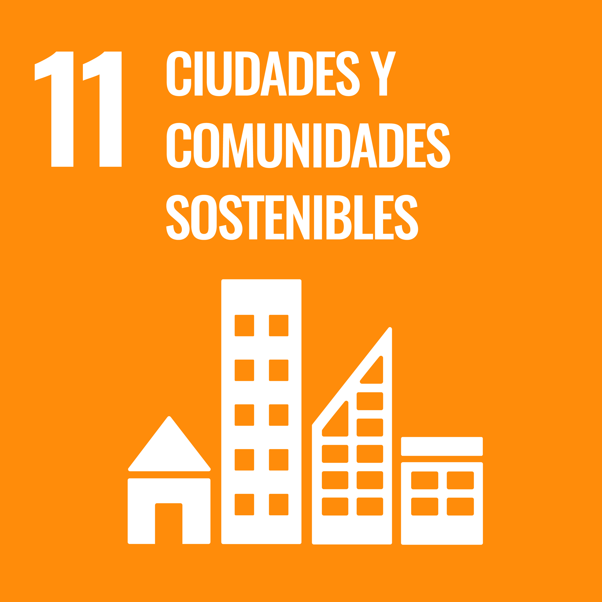
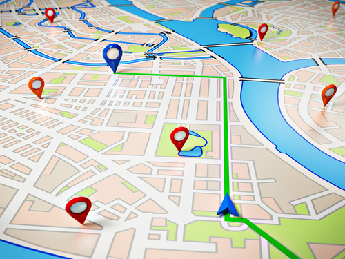
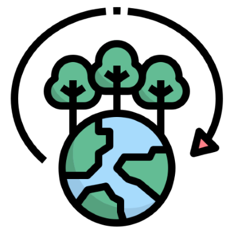

ODS relacionados con ClimaBarrio 🌱

ODS 11: Ciudades y comunidades sostenibles. Mejora la planificación urbana y la calidad de vida.

ODS 13: Acción por el clima. Permite detectar microclimas y tomar decisiones que reduzcan el impacto ambiental.
ODS 3: Salud y bienestar. Mejora la información sobre la calidad del aire para proteger la salud de la población.
Relevancia
Estos ODS son fundamentales porque permiten a ciudadanos y administraciones tomar decisiones basadas en datos reales, promoviendo entornos urbanos más saludables y sostenibles.

Riesgos y oportunidades
Riesgos: Sensores mal ubicados o falta de mantenimiento pueden producir datos
inexactos.
Oportunidades: Mayor concienciación ambiental, reducción de impactos y mejora en planificación
urbana.

Acciones concretas
Para mejorar sostenibilidad, ClimaBarrio puede:
- Optimizar el consumo energético de los sensores.
- Reciclar componentes electrónicos y plásticos.
- Impulsar campañas educativas sobre datos ambientales.